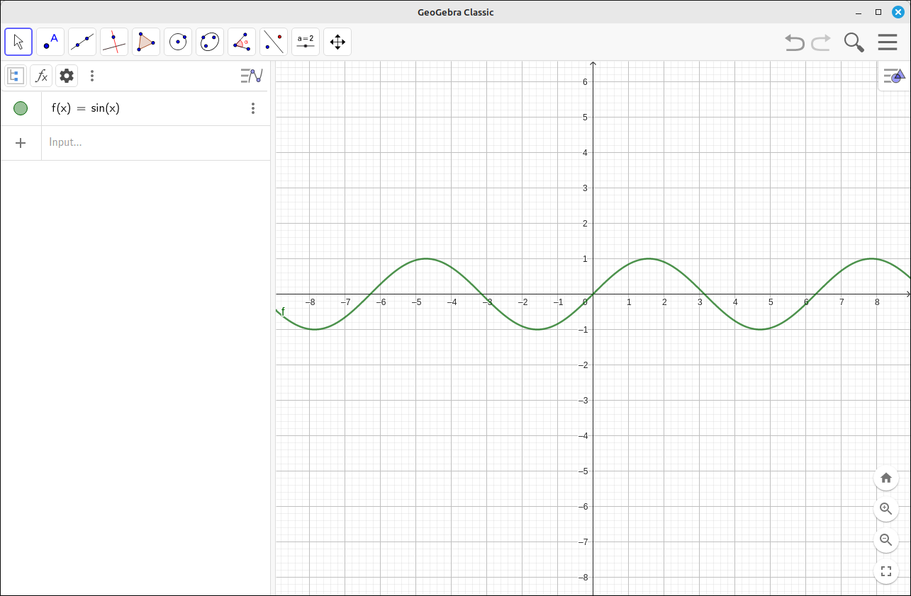
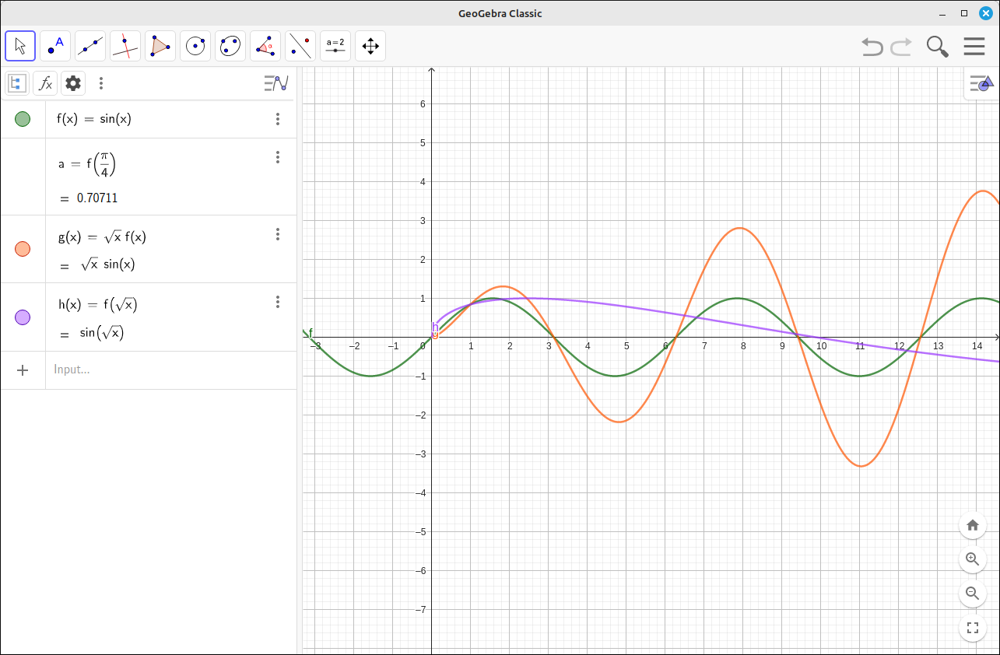
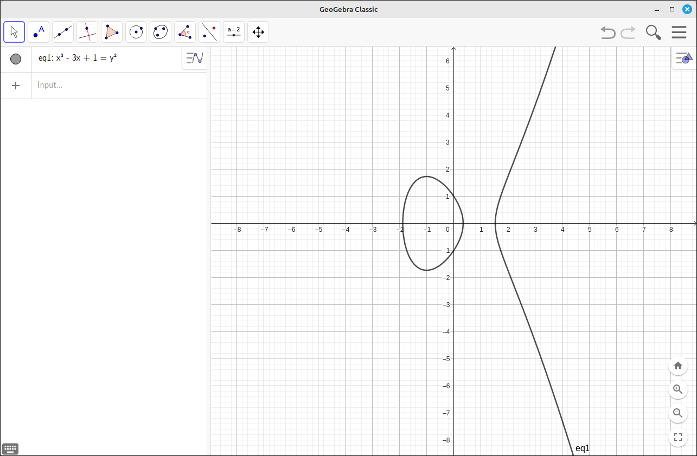
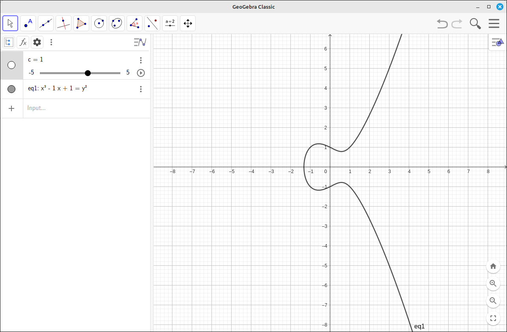

Inputting Expressions#
Example: Input the function \(f(x) = \sin(x)\)#
We will take a simple example of just inputting the function \(f(x) = \sin(x)\).
With GeoGebra open and on the default perspective, click on the input box on the left input panel. The keypad at the bottom will open up to help you formulate your expression. You can also just type it in, as we will do. Type in
sin(x)and hit enter. You should see something like the window below.
Expression Input Example#
If you do not see the small toolbar at the top of the input panel, click on the icon in the upper right of the input panel. This toolbar contains options for organizing the input objects, their display, and some other general settings. The three vertical dots allows you to quickly set views.
Click on the expression entry you just added. You will see that the keypad window opens and the curve highlights. At this point you can edit the expression. The three vertical dots on the right of the input box will produce a drop-down menu that allows you to make a copy of the expression, delete the expression, automatically display special points (roots, minimums, and maximums), or open the settings for this object. With the settings you can change the color, style, caption, and several other settings. Note that clicking the settings tool in the upper right of the graphics window will open a quick options menu allowing the color and style changes, and it has the settings cog that will open the full settings window.
In the input box for this expression you will see on the left a circle of the same color as the graph. Clicking this circle will toggle the viewing of the graph. Frequently, your graphics window will become cluttered and you will want to hide some graphs so that you can view others more effectively. Also note that clicking this opens the small quick change toolbar for that object.
You can now input more expressions in the subsequent input boxes in the same manner.
Before moving on, note that GeoGebra automatically assigned this expression to the function \(f(x)\). So in your subsequent inputs you can use \(f(x)\) just like a function.
Example: Using the automatically generated function syntax.#
If you did not do the example above, do it now so that \(f(x) = \sin(x)\) is loaded into GeoGebra.
Input the following into the next three input boxes, one at a time:
f(pi/4),sqrt(x)*f(x), andf(sqrt(x)). As you do, watch the behavior of the input box as you type.
Autogenerated Syntax Example#
You probably noticed that the input changed its form as you entered your expressions. For example, when you hit the
/key the program went into a fraction mode and your next input was in the denominator. Once you finishedsqrtthe program displayed a square root symbol. Another thing you might have noticed is that as you were typing the second expression, the f(x) might have been under the radical. In these cases, also with exponents, you can hit the right arrow key to get out of the thing you are in.Also note that all the functions were graphed, given new names, g and h, and the constant was added into the inputs panel but not graphed on the graph. This allows you to do computations without graphing the result.
In the image above we also did a left mouse button click and drag to reposition the graph for better viewing.
A few things to note here,
GeoGebra does understand juxtaposition for multiplication. So the input of
sqrt(x)*f(x)is the same as the inputsqrt(x) f(x)(note a space between thesqrt(x)and thef(x)).You can use the keypad helpers to create your expressions. So instead of typing
sqrtyou could have just hit the square root button.
Example: Implicit Expressions#
GeoGebra can work with implicit relationships as well as functions.
Start up a new GeoGebra session.
Input the expression
x^3 - 3 x + 1 = y^2. Note the use of the space for multiplication. Also remember that when you type the^your editing is now in the exponent tox, to get out of it hit the right arrow key.When you are finished hit enter and the following screen should be displayed. Note that the entry is eq1 (equation #1) and not in function format.

Implicit Expressions Syntax Example#
Example: Sliders#
When you put a constant variable into an expression (for example, c, d, etc.) GeoGebra will create a new entry with a slider control.
Start up a new GeoGebra session.
Input the expression
x^3 - c x + 1 = y^2. Note the use of the space for multiplication and note that it must be there,c xis c times x butcxis a single variable called cx. Also remember that when you type the^your editing is now in the exponent tox, to get out of it hit the right arrow key.When you are finished hit enter and the following screen should be displayed. Note that the entry is eq1 (equation #1) and not in function format.

Slider Example Image 1#
You can click the circle to the left of the slider to display the slider in the graphics area. You can move either slider to change the value of c in the expression. Note that both sliders move and the image dynamically changes.
Note that if you input an expression that uses a constant which is already a slider then that slider will be used for the value of the constant in the new expression. So, these sliders are global and work on all expressions that use the same variable. Also, you can open the settings of the slider to change its attributes, such as its endpoints, the increment, color, etc. Also, on the input entry for the slider is an animation button. This will toggle the animation of the slider on and off.